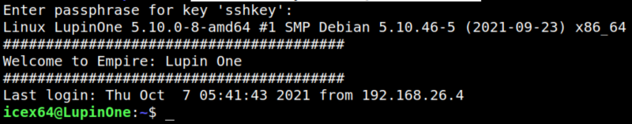
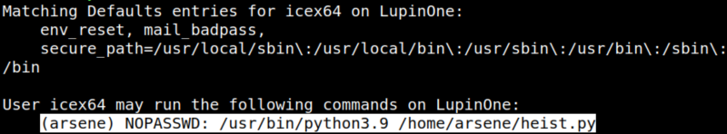

4.2 Connect via SSH
1. Connect via SSH. The user “icex64” as you saw previously.
$ssh -i sshkey icex64@192.168.12.36
Password="P@55w0rd!"
Output:

2. Identify the sudo rights for “icex64” user.
icex64@LupinOne:~$sudo -l
Output:

User “arsene” can run “heist.py”.